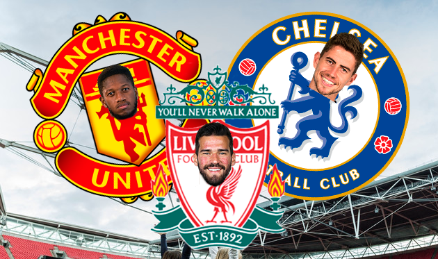

ТОП-10 лучших трансферов клубов АПЛ
Трансферное окно в Англии уже закрыто, однако среди болельщиков не утихают споры касательно правильности того или иного трансфера. На этой волне Football.ua выделяет лучшие трансферы английских клубов не с точки зрения стоимости, а с точки зрения необходимости футболиста для клуба.
1. Рияд Марез (из Лестера в Ман Сити, 67.8 млн евро)
Сперва трансфер Мареза в Ман Сити из Лестера вызывал только лишь недоумение. Каким бы Гвардиола не был фанатом таланта алжирца, но платить почти 70 миллионов евро за игрока, которому еще нужно поискать место в основе — это как минимум странно. Но, по факту имеем два выхода Рияда в старте из трех матчей и травму Кевина Де Брюйне, которая всерьез увеличивает шансы Мареза на попадание в стартовый состав.
2. Фред (из Шахтера в МЮ, 59 млн евро)
К трансферу Фреда в Англии отнеслись по-разному. Фанаты МЮ рады приезду бразильца и не сомневаются, что он станет основным в команде, однако болельщики конкурентов то и дело, что насмехаются над руководством манкунианского клуба, которое выплатило за Фреда огромную, по их мнению, сумму. Но, кому как не нам (украинцам), знать, что Фред — сильнейший футболист, способный заиграть практически в любой команде мира? Бразилец доказал свою силу в матчах за Шахтер в Лиге чемпионов (не говоря уже об УПЛ) и именно по играм в Европе скауты МЮ делали выводы.
3. Фелипе Андерсон (из Лацио в Вест Хэм, 38 млн евро)
Фелипе Андерсон провел четыре сильнейших сезона в Лацио и уже давно был готов к новому вызову. В прошлые трансферные окна игроком всерьез интересовались Челси и Манчестер Юнайтед, но в Англии бразилец оказался только сейчас. И в клубе ниже рангом. В Вест Хэме Пеллегрини ставит Фелипе слева в полузащиту и неудивительно, что на этой позиции он смотрится неубедительно, ведь в Лацио он играл везде, только не слева. Но мотивы чилийца ясны — он держит место справа для Андрея Ярмоленко!
4. Кепа Аррисабалага (из Атлетик Бильбао в Челси, 80 млн евро)
Тибо Куртуа всё лето просил руководство Челси отпустить его в Испанию и требовал своего агента договориться о трансфере в Реал. Своего бельгиец добился и "пенсионеры" были вынуждены в срочном порядке найти нового голкипера топ-класса. И в таком случае ясно — речь уже не идет о деньгах. В итоге клуб без колебаний активировал клаусулу голкипера Атлетика Кепа Аррисабалаги и сделал его самым дорогим вратарем в истории футбола. Однако, не смотрите на ценник молодого испанца — он действительно очень хорош и вполне со временем может затмить своего соотечественника Давида Де Хеа.
5. Алиссон Бекер (из Ромы в Ливерпуль, 62.5 млн евро)
Еще два года в Европе никто не знал о существовании Алиссона Бекера, а этим летом голкипер был капитаном сборной Бразилии на чемпионате мира, а после его завершения перешел из Ромы в Ливерпуль, став самым дорогим вратарем в истории футбола (ненадолго). Ливерпуль обладал топ-составом и топ-тренером, но вот с голкипером в последних сезонах были серьезные проблемы. И этим летом они наконец решились. Лучшей кандидатуры и придумать было невозможно. Теперь Клопп располагает сильнейшим составом, всерьез готовым биться за чемпионство в АПЛ и Лигу чемпионов.